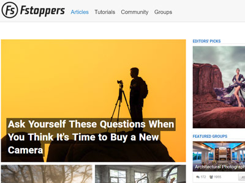
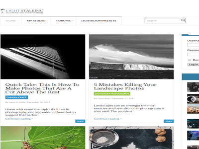

PetaPixel
Peta Pixel showcases viral-style news pieces along with industry gossip, equipment reviews, and photography news. The tutorial section is a haven for budding pros.

Fstoopers
Fstoppers is a popular online community which aims to inspire and educate photographers, both budding and established. Content ranges from in-depth series on technical skills, to how-to guides for beginners.
1X
The team at 1x bring you the latest news and industry trends, along with reviews, interviews, and masterclasses. This magazine-styled blog has monthly and weekly themes and competitions.
Digital Photography Review
As the name suggests this blog from Digital Photography Review covers digital news and events while keeping the focus mainly on equipment. The in-depth reviews are a great stop for those bogged down in buying choices.
Digital Photography School
Founded by Darren Rowse of Problogger fame, Digital Photography School helps both beginner and advanced photographers get to grips with the techniques and tips they need.
The Phoblographer
The Phoblographer has the tag line 'the psychology of creative photography'. The articles on here range in focus from debates on the digital/film divide to roundups of the latest creative trends.

Light Stalking
Light Stalking offers a focus on the people behind the cameras and the bodies of work they produce. They aim to bring great photography to the fore and showcase emerging trends, while keeping an eye on technique.
Shotkit
Shotkit shares reviews of various types of camera gear, as well as allowing it's readers to earn photography, get inspired and grow their photography business.
.jpg)
121 Clicks
121 Clicks offers longer-form reporting and analysis of works by renowned, and up and coming, artists. They also showcase a few how-to videos and technical guides.